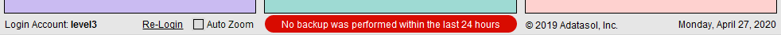
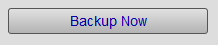
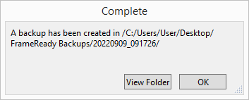
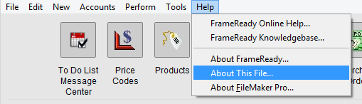
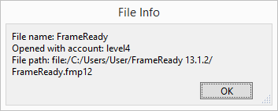

Making a FrameReady "Single User" Backup
With the click of a button, your important data files can be saved to a folder on the Desktop, in your Documents folder, or to an other location.
-
Use these steps if you only have a single computer running FrameReady.
-
If you have multiple computers and are using FileMaker Server, see: Backing Up FileMaker Server
-
With the click of one button, your important data files can be saved to a folder on the Desktop, in your Documents folder, or an other location. This feature creates a time-stamped backup folder.
How to Set up FrameReady "Single User" Backups
How to Make a FrameReady Backup
These are the recommended steps for backing up a "Single User" FrameReady.
-
If you have not yet set up your backups, see: Set up Single User Backups
-
Log in as level4.
-
On the Main Menu, click the Setup Data button,
OR
If you have checked the Display alert when a backup hasn't been performed during the last 24 hours, then click the red notice at the bottom of the Main Menu.

-
Open the Backup tab and click the Backup Now button.

-
A message similar to this appears, e.g.:
"A backup has been created in /C:/Users/User/Desktop/FrameReady Backups/20220909_091726"

-
Click View to see the saved files.
Confirm that you see the following files:
Data01.fmp12
Data02.fmp12
Data03.fmp12
Data04.fmp12
Data05.fmp12
Data06.fmp12
Data07.fmp12
Data08..fmp12
If any of the files are missing, exit FrameReady and manually copy them over.
The parent folder is named FrameReady Backups and inside are time-stamped folders, e.g. 20220909_091726 -
If the FrameReady Backups folder is stored on the same computer, we strongly recommend that you copy the folder to a Flash drive, an external hard drive, or to a Cloud folder.
Caution: The backup files are located on the same computer as FrameReady; it is highly recommended that you copy the backup folder to a removable USB drive and take them off-site and/or save them to an online file service.
Where is FrameReady Installed?
Do not move FrameReady into a Dropbox, Google Drive or OneDrive folder; your data can become corrupted, or lost, because of sync processes trying to access an open file.
-
Go to the Main Menu.
-
From the top menu bar, click Help and choose About this file...

-
In the File Info dialog box, note the File path.

Do not move FrameReady into a Dropbox, Google Drive or OneDrive folder; your data can become corrupted, or lost, because of sync processes trying to access an open file.
For FileMaker Server Users
-
Your FrameReady files are stored on the Server computer's hard drive.
-
If the File path begins with fmnet then that is the IP address of your FileMaker Server.
For Single Users, the Default location of FrameReady
-
Windows: C:\Users\[Account name]\FrameReady ##
-
mac OS: Macintosh HD\Users\[Account name]\FrameReady ##
How to Make a Manual Backup in Windows
We recommend that you use the above, built-in backup feature in FrameReady. These steps are included for reference only.
-
Quit out of your FrameReady program.
-
Open the Windows Explorer program Windows key + E .
-
Locate and click Local Disk C.
-
Locate and double-click the Users folder.
-
Double-click the folder for your Windows Account name.
-
Right-click the FrameReady ## folder and select Copy.
You may have earlier versions of FrameReady on your system; be sure to choose the version you are currently using! -
Plug in your USB drive.
-
Double-click the drive that represents your USB drive.
-
Go to the Edit menu at the top of the screen and click Paste.
-
If you do not see the edit menu, press the Alt key on your keyboard.
You may see a progress bar as the files are copied to the USB drive. -
Right-click the FrameReady backup folder and select Rename. Add the current date to the folder name.
A month (02), day (05), year (2018) format is recommended, e.g. FrameReady 11 02052018 -
Remove the backup device from the computer and be sure to safely store it off-site.
Zip Backup Option for Windows
-
Right-click the FrameReady folder and choose Send to > Compressed (zipped) folder.
-
When Windows finishes zipping up the folder, give the file a useful name such as FrameReady Backup January 5 2023.zip
-
Copy the file to another storage location, such as USB drive, a network drive or cloud folder and be sure to safely store it off-site.
How to Make a Manual Backup on a Mac
-
Quit out of your FrameReady program.
-
Open Finder and, in the left pane, look for and click Applications. In the right pane, scroll down and locate the FrameReady folder.
-
Single-click the folder, so that it's selected and, in the menubar, click Edit and choose Copy.
-
Close this window.
-
Plug in your USB drive.
-
If a new Finder window doesn't automatically open, then look for an icon on your desktop that represents your USB drive. Double-click it and Finder opens.
-
From the menu bar choose Edit > Paste.
A progress bar appears as the files are copied over. -
Single-click the FrameReady backup folder.
-
Single-click on the filename and add the current date to the existing name.
A month (01), day (05), year (2018) format is recommended, e.g. FrameReady 11 01052022. -
Remove the backup device from the computer and be sure to safely store it off-site.
Zip Backup Option for Mac
-
Right-click (or Control + click) the FrameReady folder and choose Compress "FrameReady ##"
-
When OSX finishes zipping up the folder, give the file a useful name such as FrameReady Backup January 5 2023.zip
-
Copy the file to another storage location, such as USB drive, a network drive or cloud folder and be sure to safely store it off-site.
© 2023 Adatasol, Inc.